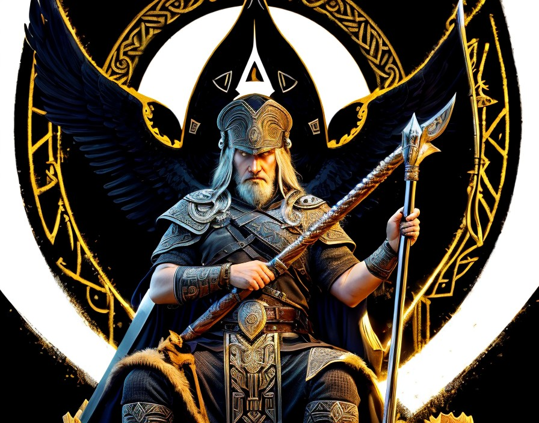

ODIN
In the rich tapestry of Norse mythology, Odin stands as a towering figure, embodying a complex amalgamation of traits that encapsulate the essence of divinity and wisdom. Revered as the All-Father, he reigns supreme among the gods of Asgard, presiding over realms of war, wisdom, poetry, and magic. Odin's enigmatic persona, characterized by his relentless pursuit of knowledge and his willingness to traverse perilous realms, renders him a quintessential deity whose influence permeates every aspect of Norse cosmology. Originating from the ancient Germanic traditions, Odin's mythological narrative intertwines with the primal forces of creation and destruction. As the son of Borr and Bestla, he emerges as one of the primordial deities, existing before the dawn of time. His lineage, traced through the Æsir tribe, positions him as a central figure within the Norse pantheon, alongside his brothers Vili and Ve. At the core of Odin's mythology lies the concept of sacrifice. In the pursuit of wisdom and enlightenment, Odin famously sacrificed one of his eyes at the Well of Mímir, seeking the profound knowledge guarded by the primordial being. This symbolic act underscores the theme of enlightenment through personal sacrifice, showcasing Odin's unwavering commitment to acquiring knowledge at any cost.
Additionally, Odin's selflessness extends to his sacrifice of himself to himself, hanging upon the World Tree, Yggdrasil, for nine nights, pierced by his own spear, in order to obtain the mystical knowledge of the runes. Such acts exemplify Odin's transcendent wisdom and his willingness to endure suffering for the betterment of the cosmos. Odin's role as the god of war is equally significant in Norse mythology. Revered by warriors across the realms, he oversees Valhalla, the great hall where fallen heroes are welcomed after death. Valhalla serves as both a reward for valorous deeds and a testament to Odin's martial prowess, as he prepares for Ragnarök, the apocalyptic battle that signifies the end of the world. In this cataclysmic event, Odin is destined to confront the monstrous wolf Fenrir, alongside his fellow gods, in a final showdown that will determine the fate of existence itself.
Furthermore, Odin's association with magic and shamanism adds another layer of complexity to his character. As the master of seidr, a form of sorcery associated with prophecy and manipulation of fate, Odin transcends the boundaries between the mortal and divine realms. His patronage of practitioners such as the volva, or Norse prophetesses, demonstrates his capacity to wield magic as a means of navigating the intricacies of fate and destiny. Odin's influence extends beyond the confines of Asgard, permeating the cultural landscape of the Norse world. From the poetry of the skalds to the martial prowess of Viking warriors, his presence looms large, shaping the collective consciousness of his worshippers. Whether depicted as the wise wanderer, the fearsome warlord, or the enigmatic sage, Odin embodies the multifaceted nature of divinity, transcending traditional notions of godhood. In conclusion, Odin stands as a preeminent figure within Norse mythology, embodying the timeless themes of wisdom, sacrifice, and transcendence. As the All-Father of the Æsir, his influence reverberates throughout the cosmos, shaping the destiny of gods and mortals alike. Through his myths and legends, Odin invites us to embark on a journey of self-discovery and enlightenment, challenging us to confront the mysteries of existence with courage and resolve. In the pantheon of Norse deities, Odin reigns supreme as the eternal wanderer, the divine seeker of truth in a world shrouded in myth and mystery.